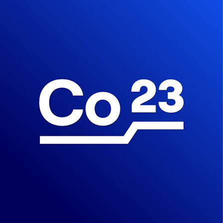
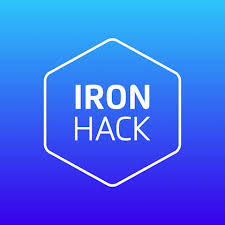
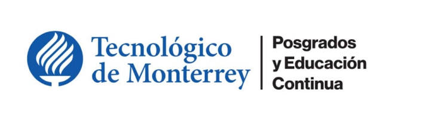

Para equipos que buscan resultados
Mi trabajo no termina cuando sale el feature. Empieza en el problema del usuario y termina en la métrica de negocio.
Conecto discovery, diseño, tecnología y negocio en un mismo flujo, en lugar de optimizar cada pieza por separado.
UX, datos, riesgo y growth en la misma mesa. Riesgos, Operaciones, Legal, Marketing y CX participan como socios desde el inicio.
Cada iniciativa nace con una métrica clara: cartera, abandono, tiempo de fondeo o NPS. Si no se mueve, iteramos.
La uso en cada etapa del ciclo de producto para decidir más rápido y con más datos. La IA acelera; el criterio de producto, el usuario y el equipo deciden.
Lidero el análisis entre el primer y segundo fondeo de tarjeta de crédito con Claude y ChatGPT, para definir la estrategia de adquisición en menos tiempo.
Paso de la idea a un prototipo navegable en horas, para validarlo con usuarios y stakeholders antes de comprometer a ingeniería.
Proceso grandes volúmenes de información para priorizar con RICE y diseñar A/B tests con mejor evidencia, no con intuición.
Este sitio es la prueba: lo diseñé y construí con Claude, de la idea al código publicado en GitHub.
Cómo trabajo · Pensar, construir, crecer
Design Thinking, diseño centrado en el usuario, negocio y growth aplicados al mismo flujo. Ninguno funciona solo.
Convierto problemas de usuario en estrategias de producto claras.
Llevo la estrategia a producción sin perder el control del riesgo.
Hago que el producto escale después del lanzamiento.
Proceso
Entiendo al usuario y al negocio con datos, investigación e IA: dónde se rompe el flujo y cuánto cuesta.
Prototipo la solución con apoyo de IA y la pruebo con usuarios antes de comprometer a ingeniería.
Lanzo con tecnología, riesgo y operaciones, construyendo la señal y las reglas mientras avanzamos, no antes.
Mido, itero con A/B testing y escalo junto a Growth, Marketing y CX.
Impacto
Casos de éxito
Blog
Lo que aprendo construyendo productos financieros, contado sin tecnicismos.
Cómo medir y decidir cuando el embudo casi no tiene datos.
Próximamente · 5 minLo que aprendí rediseñando una solicitud de crédito a 24 horas.
Próximamente · 4 minMi flujo con Claude y ChatGPT para pasar de datos a decisiones.
Próximamente · 5 minTrayectoria
Daily Banking: originación de crédito digital, tarjeta de crédito, cuenta remunerada y onboarding (KYC). Cuatro líneas en paralelo con PO, UX/UI, arquitectura e ingeniería.
Banca móvil y web a escala: más de 8M de usuarios en KYC, onboarding, home, pagos y 2FA, en coordinación matricial con equipos de 8 países.
Lanzamiento end-to-end de Now.Bank, el primer neobanco de México (350k+ usuarios), liderando al equipo de México de forma remota.
User research, journey mapping y discovery basado en datos para productos financieros digitales. Ahí nació mi forma de pensar producto desde el usuario.
Herramientas
Roadmap y backlog · Discovery · User research · JTBD · RICE · OKR · DoR / DoD / RACI
Originación digital · Buró de crédito · Scoring / underwriting · Tarjeta de crédito · Cuenta remunerada
A/B testing · Funnels · Push y email · SQL · Claude / ChatGPT para análisis y prototipado · Jira · Confluence · Figma · Miro
Lic. en Administración (UVM) · Especialización en Marketing Digital (ITESM) · Product Manager (Colectivo 23) · UX Strategy (Ironhack) · Español nativo, inglés B1



Fuera de la oficina: ciclismo de montaña, trail running, carreras de resistencia, orientación y trekking.
¿Buscas un PM que piense en usuario, negocio y growth al mismo tiempo? Hablemos 30 minutos sobre tu equipo y tus retos.
o escríbeme a otriasm@gmail.com
Colaboro en proyectos puntuales: discovery, diseño de flujos de originación y onboarding, y estrategia de growth para productos financieros.
Cuéntame tu proyecto